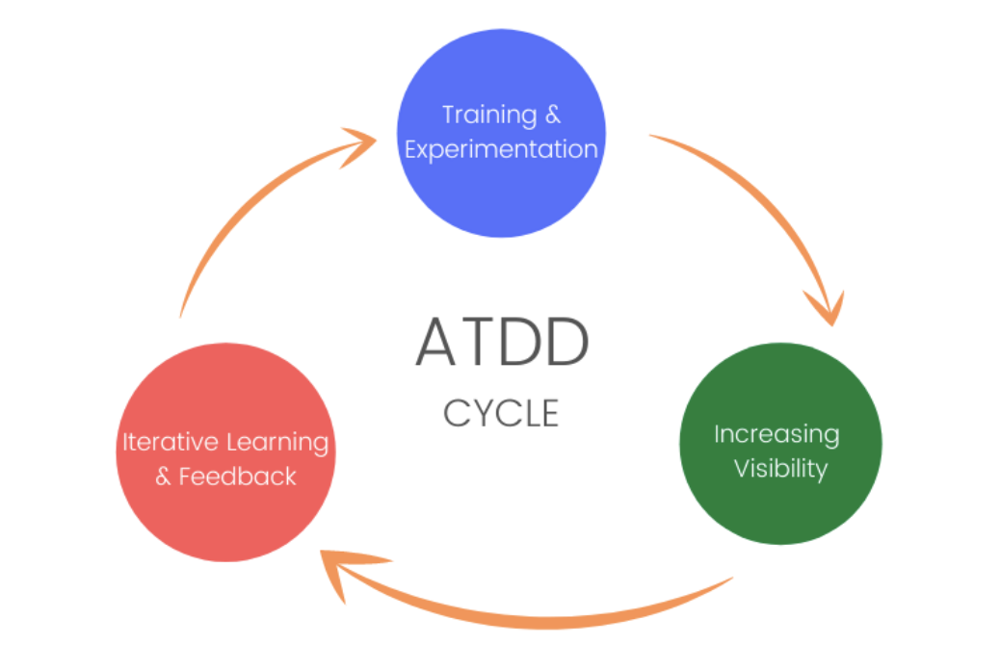

Acceptance Test-Driven Development (ATDD) on tarkvaraarenduse metoodika, kus tarkvara arendamine algab aktsepteerimisnõuete määratlemisega.
ATDD tagab, et kõik osapooled mõistavad täpselt, mida ootatakse. Soodustab tihedat koostööd arendajate, testijate ja ärianalüütikute vahel. Aitab vältida vigu, kuna testimine algab juba arendamise alguses.
Ajamahukas, kuna enne koodima hakkamist tuleb määrata testid. Kui asjad on väga täpselt kirja pandud, siis võib nende lahendamine tekitada probleeme. Koostöö erinevate meeskonnaliikmete vahel, mis võib suurendada ressursikulu.
Robot Framework: Avatud lähtekoodiga üldotstarbeline testimisraamistik, mis toetab ATDD-d ning võimaldab kirjutada teste lihtsas tabelipõhises vormingus.
